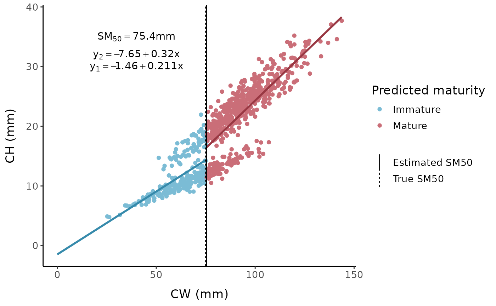
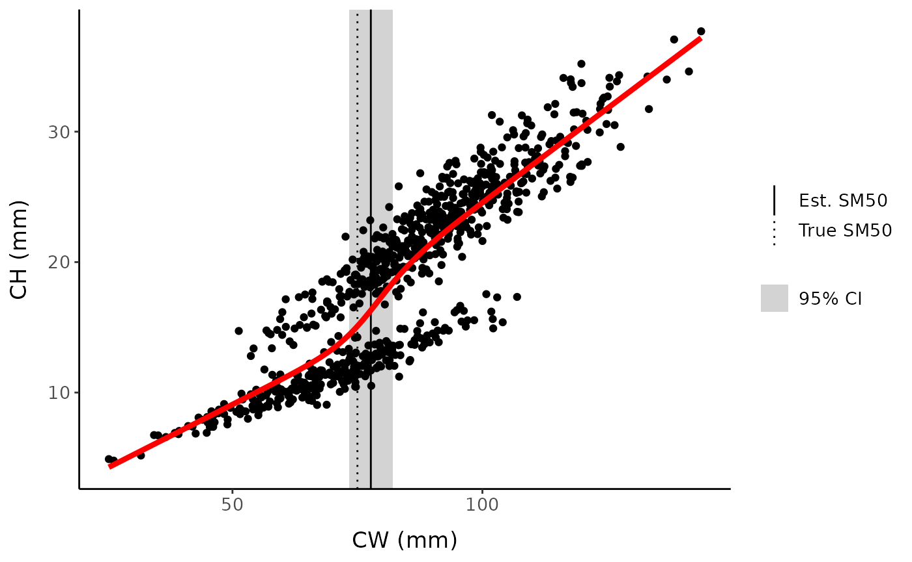

#> [[1]]
#> [1] TRUE
#>
#> [[2]]
#> [1] TRUE
#>
#> [[3]]
#> [1] TRUE
#>
#> [[4]]
#> [1] TRUE
#>
#> [[5]]
#> [1] TRUEDescription
Two-line models differ from broken-stick models because the intersection point of the line representing the immature individuals and the line representing mature individuals is not necessarily the same as the optimal breakpoint value (the value on the x-axis where the y-values switch from being predicted by the immature line to being predicted by the mature line).
We will test two slightly different versions of this approach using code from Crab_Maturity (Olsen and Stevens 2020). The first version uses a piecewise regression model to find the x-value/breakpoint that gives the lowest mean square error (MSE) by iteratively testing each observed x-value within the range of unknown maturity. In the second version, the tested x-values are evenly spaced points within the unknown range, and may not equal actual observed values (like REGRANS). The number of (and therefore interval between) points can be user-defined.
The SM50 could be defined as the optimal breakpoint OR as the point at which the two lines actually intersect; i.e. where the regression equations predict the same y-value. The intersection point may be much lower or higher than the previously determined breakpoint and can even be negative, so it is often more reasonable to use the breakpoint as our estimate of SM50.
Two-line: standard
set.seed(12) # set seed for reproducibility
fc <- fake_crustaceans(
error_scale = 17,
slope = 9,
L50 = 75, # known size at maturity is 75 mm
n = 800, # sample size
allo_params = c(0.9, 0.25, 1.05, 0.2),
x_mean = 85 # mean carapace width of the sample
)
The default function call iterates over 100 evenly-spaced points between the default upper and lower bounds (0.2 and 0.8 quantiles of the x-axis variable) of the region to search for possible SM50 values.
two_line_est <- two_line(fc, "x", "y", verbose = FALSE)
two_line_est#> breakpoint intersection
#> 75.43651 56.76587
TL_full <- two_line(fc, "x", "y", verbose = TRUE)
# Plot results
ggplot(data = TL_full$data) +
geom_point(aes(x, y, color = as.factor(group))) +
labs(x = "CW (mm)", y = "CH (mm)", color = "Predicted maturity",
linetype = NULL) +
mytheme +
scale_color_manual(
values = c("1" = "#7bbcd5", "2" = "#CA6E78"),
breaks = c(1, 2),
labels = c("1" = "Immature", "2" = "Mature")) +
annotate(
geom = "segment",
x = 0,
y = TL_full$imm_int,
xend = TL_full$breakpoint,
yend = TL_full$imm_int + TL_full$imm_slope * TL_full$breakpoint,
color = "#368aab",
linewidth = 1
) +
annotate(
geom = "segment",
x = TL_full$breakpoint,
y = TL_full$mat_int + TL_full$mat_slope * TL_full$breakpoint,
xend = max(TL_full$data$x),
yend = TL_full$mat_int + TL_full$mat_slope * max(TL_full$data$x),
color = "#993843",
linewidth = 1) +
geom_vline(aes(xintercept = TL_full$breakpoint, linetype = "Estimated SM50"),
linewidth = 0.5) +
geom_vline(aes(xintercept = 75, linetype = "True SM50"), linewidth = 0.5) +
annotate("text", x = c(40, 40, 40), y = c(35, 30, 32),
label = c(
sprintf("SM[50] == %.3g * mm",
TL_full$breakpoint),
sprintf(
"y[1] == %.3g + %.3g * x",
TL_full$imm_int,
TL_full$imm_slope),
sprintf(
"y[2] == %.3g + %.3g * x", TL_full$mat_int, TL_full$mat_slope)),
parse = TRUE)
The result is relatively robust to the number of breakpoints tested:
two_line(fc, "x", "y", verbose = FALSE, num_bps = 50)
#> breakpoint intersection
#> 75.51575 56.76587
two_line(fc, "x", "y", verbose = FALSE, num_bps = 400)
#> breakpoint intersection
#> 75.53869 56.31673Alternatively, possible breakpoints can be restricted to values of the x-axis variable present in the data:
two_line(fc, "x", "y", verbose = FALSE, bps = "obs")#> breakpoint intersection
#> 75.60928 56.61033Two-line: logistic transition
tll_est <- two_line_logistic(fc, "x", "y", verbose = FALSE)
tll_est#> SM50
#> 77.68165
tll_full <- two_line_logistic(fc, "x", "y", verbose = TRUE)
nlstools::overview(tll_full)#>
#> ------
#> Formula: yvar ~ TLL_fun(xvar, int1, slope1, int2, slope2, SM50, alpha)
#>
#> Parameters:
#> Estimate Std. Error t value Pr(>|t|)
#> int1 -0.63809 1.69216 -0.377 0.7062
#> slope1 0.19444 0.03007 6.467 1.75e-10 ***
#> int2 -4.24833 2.02491 -2.098 0.0362 *
#> slope2 0.28825 0.01897 15.192 < 2e-16 ***
#> SM50 77.68165 2.21651 35.047 < 2e-16 ***
#> alpha 3.88563 1.70331 2.281 0.0228 *
#> ---
#> Signif. codes: 0 '***' 0.001 '**' 0.01 '*' 0.05 '.' 0.1 ' ' 1
#>
#> Residual standard error: 3.061 on 794 degrees of freedom
#>
#> Number of iterations to convergence: 8
#> Achieved convergence tolerance: 1.49e-08
#>
#> ------
#> Residual sum of squares: 7440
#>
#> ------
#> t-based confidence interval:
#> 2.5% 97.5%
#> int1 -3.9597356 2.6835487
#> slope1 0.1354153 0.2534587
#> int2 -8.2231391 -0.2735231
#> slope2 0.2510070 0.3254961
#> SM50 73.3307378 82.0325552
#> alpha 0.5421100 7.2291453
#>
#> ------
#> Correlation matrix:
#> int1 slope1 int2 slope2 SM50 alpha
#> int1 1.0000000 -0.9877163 0.2100545 -0.1960934 -0.5682064 0.4767719
#> slope1 -0.9877163 1.0000000 -0.2446223 0.2285040 0.6113271 -0.5474000
#> int2 0.2100545 -0.2446223 1.0000000 -0.9951569 0.3491050 0.6073642
#> slope2 -0.1960934 0.2285040 -0.9951569 1.0000000 -0.3466532 -0.5693816
#> SM50 -0.5682064 0.6113271 0.3491050 -0.3466532 1.0000000 -0.2245592
#> alpha 0.4767719 -0.5474000 0.6073642 -0.5693816 -0.2245592 1.0000000
tll_confint <- nlstools::confint2(tll_full, parm = "SM50",
method = "asymptotic") # or method = "profile"Custom plot:
fc %>%
mutate(y_pred = predict(tll_full)) %>%
ggplot() +
geom_rect(aes(
xmin = tll_confint["SM50", 1],
xmax = tll_confint["SM50", 2],
ymin = -Inf,
ymax = Inf,
fill = "lightgrey"), data = data.frame(x=c(1))
) +
geom_vline(aes(
xintercept = summary(tll_full)$parameters["SM50", "Estimate"],
linetype = "Est. SM50"), linewidth = 0.5) +
geom_point(aes(x, y)) +
mytheme +
geom_vline(aes(xintercept = 75, linetype = "True SM50"), linewidth = 0.5) +
geom_line(aes(x = x, y = y_pred),
linewidth = 1.5,
color = "red") +
scale_linetype_manual(values = c("solid", "dotted")) +
labs(x = "CW (mm)", y = "CH (mm)", linetype = NULL, fill = NULL) +
scale_fill_manual(values = "lightgrey", labels = "95% CI")